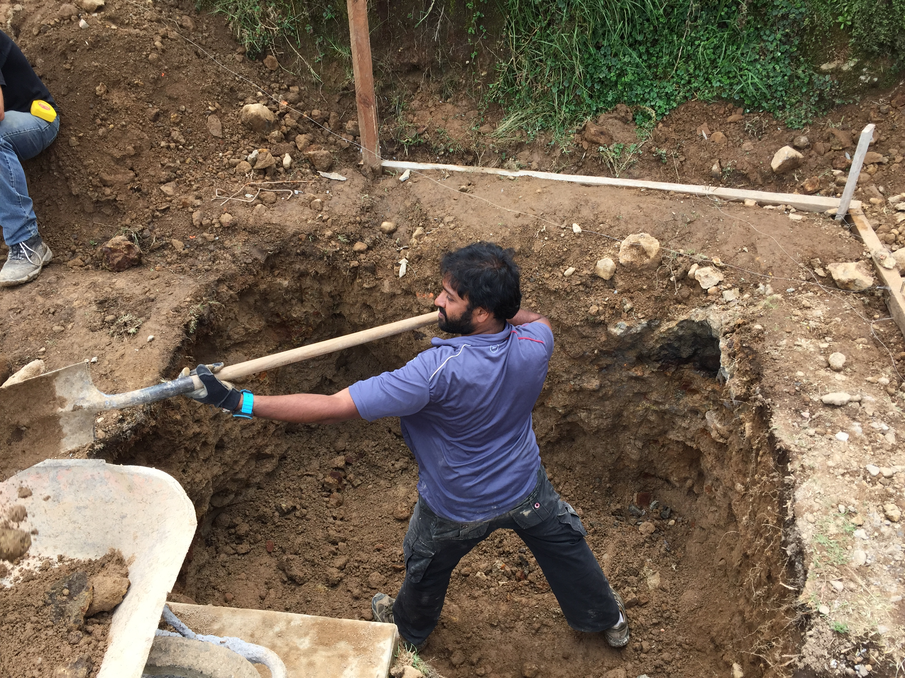
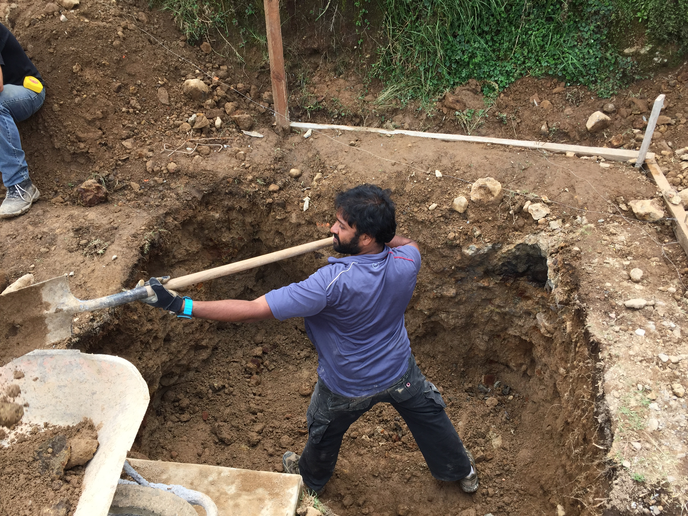

Part of the Guatemala Project Team.As Part of the Guatemala Project Team, I was able to help in construction of community center. We also helped in setting up and maintain a fish hatchery.
Center for Neuro Technology Undergrad Mentor
As a Ph.D student I mentored 4 underdergrad students to conduct their independent research.
 
